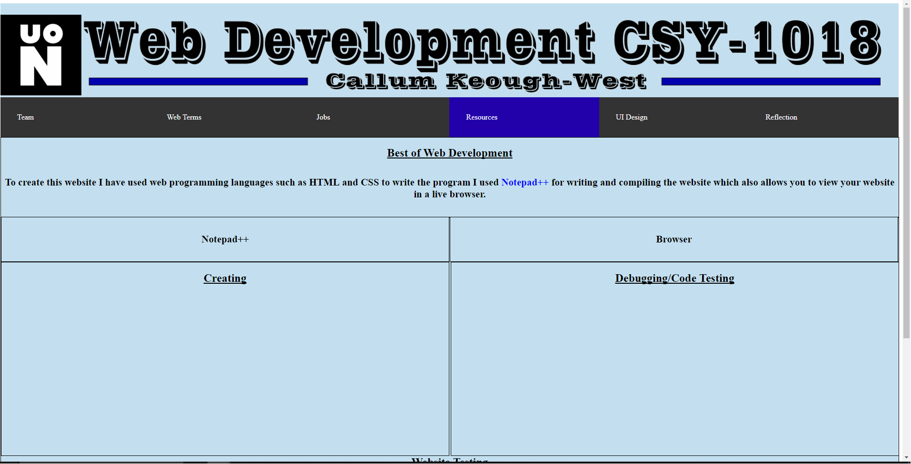
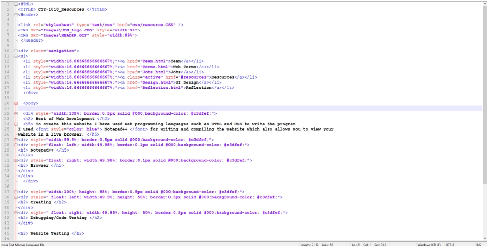
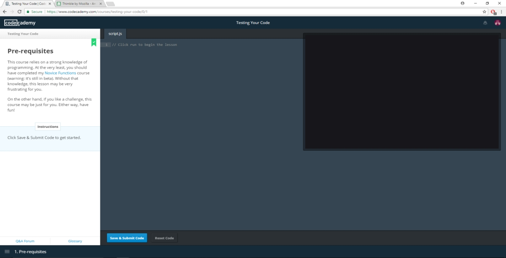
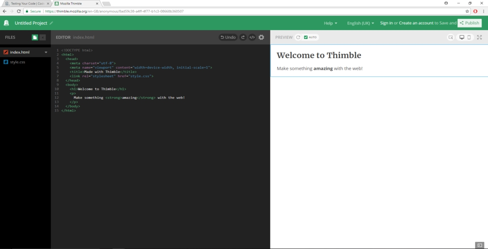

Best of Web Development
To create this website I have used web programming languages such as HTML and CSS, to write the program
I used Notepad++ for writing and compiling the website which also allows you to view your
website in a live browser.
Website Testing
Browser :

To test the functionality of my website I prefer the testing of viewing
the website in a live internet browser by doing this I am able to view the look of the website and I
am able to test the functionality as it will be viewed by other users. This is also a good method as
you can show the final product to other people so they can test it as an outside user looking in this
is beneficial because then you can get feedback quickly and accurately as they have seen the product
and not endless lines of code. This test is useful if you want to make changes to the visual
aspect of the website and therefore you can see it then change it.
Creating the Website
Browser :

I have chosen to use Notepad++ because you are able to write code in many different languages
such as HTML and CSS. This makes creating a website easier because it helps you with the process.
It does this by giving you a selection of tools, commands and autofills.
There is other software that can be used. There is an online website that has been made called Mozilla Thimble this
website helps when creating websites. Thimble is especially good for beginners as it provides tutorials to coding. It is also
very useful for long term learners who are trying to learn something new.
Debugging/Code Testing
There are many online testers that will help with your code if you feel you need it such as: Wix Help Center there you can
enter your code and it will display that it works. If it doesn's display correcty then there is an issue with the code that will need fixing. By using
this website it is a good tool to use if your website isn't working and you would like to see where it isn't working. It will help with creators in the
future as they will know where they went wrong and how to change so that they don't make the same mistake again in future purposes.
Another website is called CodeAcademy they have many tutorials on how to build a website and they teach you how to test the
website once you have complete the turoial you should be able to test your website on your own if not you are able to retake
the tutorial as many times as you feel neccessary. There is also a discussion board where you can talk to other website
producing enthusiasts and get futher help with your projects.
Code Academy

This is a screenshot of the website Code Academy this is where you can find help and tutorials
to help with the languages HTML and CSS.
Mozilla Thimble

This is a screenshot of the website Mozilla Thimble this is where you can
learn to code and show you where you go wrong but can also test your own code.